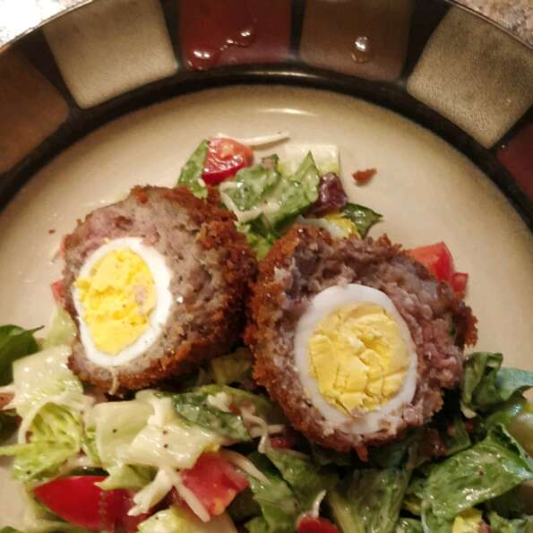

Scotch Eggs

Serving
Scotch eggs are a common picnic food. In theUnited Kingdom packaged Scotch eggs are available in supermarkets,
corner shops and motorway service stations. Miniature versions are also widely available, sold as "mini scotch eggs" "savoury eggs",
"picnic eggs", "party eggs", "snack eggs", "egg bites" or similar. These contain chopped egg or a quail's egg, rather than a whole chicken egg,
and sometimes contain mayonnaise or chopped bacon.
In the United States, many "British-style" pubs and eateries serve Scotch eggs, usually served hot with dipping sauces such as ranch dressing,
hot sauce, or hot mustard sauce. At the Minnesota State Fair Scotch eggs are served on a stick.[7] Scotch eggs are available at most Renaissance
Festivals across the US.
Ingerdiants
- 1 quart oil for frying
- 2 pounds pork sausage
- 4 eggs
- 4 cups dried bread crumbs, seasoned
- 1 cup all-purpose flour
- 4 eggs, beaten
Steps:
- Preheat oven to 350 degrees F (175 degrees C). Heat oil in deep-fryer to 375 degrees F (190 degrees C).
- Place eggs in saucepan and cover with water. Bring to boil. Cover, remove from heat, and let eggs sit in hot water for 10 to 12 minutes. Remove from hot water, cool and peel.
- Flatten the sausage and make a patty to surround each egg. Very lightly flour the sausage and coat with beaten egg. Roll in bread crumbs to cover evenly.
- Deep fry until golden brown, or pan fry while making sure each side is well cooked. Bake in the preheated oven for 10 minutes.
- Cut in half and serve over a bed of lettuce and sliced tomatoes for garnish. If mustard is desired it looks beautiful over this.